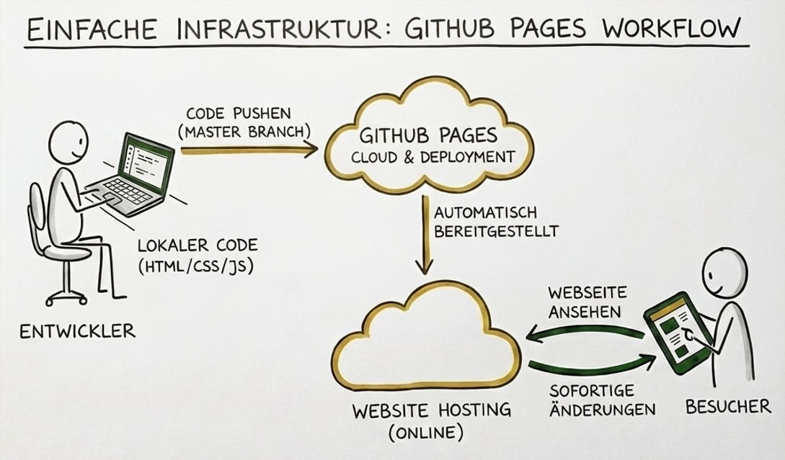

Willkommen auf der neuen Website des Schützenvereins - Hier erstrahlt der Schützenverein ab sofort in neuem Glanz.
Warum ein Neustart?
Bisher basierte unsere Website auf WordPress. Das System bot zwar den Vorteil, Seiten per „Drag-and-Drop“ ohne Programmierkenntnisse zusammenzuklicken, brachte aber zunehmend Herausforderungen mit sich:
- Sicherheitsrisiken: Um ein modernes Design zu erreichen, waren viele zusätzliche Erweiterungen (Plugins) nötig. Jedes Plugin ist ein potenzielles Einfallstor für Angreifer, wenn es nicht ständig aktualisiert wird.
- Wartungsaufwand: Backups mussten regelmäßig erstellt und die Software laufend überwacht werden.
- Kosten: Für das Hosting und die Verwaltung fielen regelmäßige Gebühren an.
Modern, Sicher, Schlank: Unser neuer Weg
Wir haben uns daher für einen technologischen Kurswechsel entschieden. Die neue Website wurde von Grund auf neu programmiert und nutzt nur "vanilla" HTML, CSS und JavaScript.
Die Website wird lokal entwickelt und anschließend auf GitHub gepushed. Technisch interessierte können den Code hier einsehen. Von dort wird sie automatisch über das Git Hub Pages Deployment bereitgestellt. Änderungen werden schnell übernommen.
Was bedeutet das für euch und den Verein?
- Maximale Sicherheit: Da wir keinen „Baukasten“ und keine Datenbanken mehr im Hintergrund nutzen, gibt es weniger Angriffsvektoren durch Plugins, auch wenn die Website für längere Zeit nicht geupdated wird.
- Kostenlose Bereitstellung: Durch das Hosting auf GitHub Pages entfallen die monatlichen Gebühren für den Speicherplatz. Das entlastet die Vereinskasse dauerhaft.
- Einfache Wartung: Der Code ist sauber und transparent. Änderungen können direkt im Quelltext vorgenommen werden, ohne dass wir uns um Software-Updates im Hintergrund kümmern müssen.